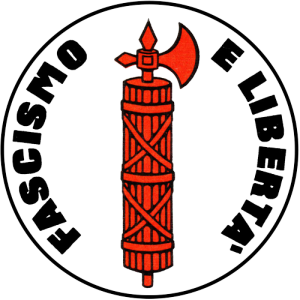

| Simbolo da anarquia |
O anarquismo é uma teoria política e que tem o propósito de acabar com autoritarismo do Estado e o capitalismo. A palavra anarquia tem origem no grego an (não) e archos (governo). A característica principal dessa teoria é o fim total do Estado e do capitalismo. Esse tipo de teoria politica opõe-se a hierarquias de quaisquer tipos e tudo o que se relacione com dominação, seja econômica, cultural, social ou política, por exemplo: o Estado, o capitalismo, patriarcado, etc. O anarquismo surgiu com o político francês Pierre-Joseph Proudhon, que por algum tempo foi membro do Parlamento francês e pertencente a uma família de pequenos burgueses. O político fez severas críticas a presença do Estado nas organizações políticas e também criticou a aquisição da propriedade privada (um símbolo maior do capitalismo). Para Pierre-Joseph Proudhon, a propriedade privada se caracterizava como a principal razão das desgraças da humanidade, enquanto que o Estado servia apenas para oprimir as pessoas e forçá-las a ficarem presas à lógica capitalista. Outras das características do anarquismo são: a rejeição do poder estatal, rejeição do autoritarismo, a livre associação entre as pessoas, a crítica a todas as formas de opressão, a liberdade pessoal de cada um, ou seja, a individualidade e também contra às diferenças entre classes sociais e econômicas. Além disso, o anarquismo não é contra a ordem social, contudo ele prega que isso deve existir sem que seja necessária a intervenção de um governo. Ela também valoriza as instituições econômicas que se constituam por membros voluntários. |
| Simbolo do comunismo |
O Comunismo é uma ideologia política, com o principio de uma sociedade igualitária.
Também é um movimento social, filósifo, social e econômico. A palavra comunismo vem do deriva do
communisme (francês), que se desenvolveu a partir do latim communis e do sufixo isme.
O comunismo inclui uma variedade de escolas de pensamento que incluem o marxismo e o
anarcocomunismo, assim como as ideologias políticas agrupadas em torno de ambos,
todas as quais compartilham a análise de que a ordem atual da sociedade deriva do
capitalismo, seu sistema econômico e seu modo de produção. Neste sistema existem duas
classes sociais principais, sendo que a relação entre essas duas classes é de
exploração e que esta situação só pode ser resolvida em última instância por meio de
uma revolução social.
O proletariado (a classe trabalhadora), que constitui a maioria da população na sociedade
e deve trabalhar para sobreviver; e a burguesia (a classe capitalista), uma pequena
minoria que obtém lucro do emprego da classe trabalhadora por meio da propriedade privada
dos meios de produção. De acordo com esta análise, a revolução colocaria a classe
trabalhadora no poder e, por sua vez, estabeleceria a propriedade social dos meios de
produção, que é o elemento primário na transformação da sociedade para o comunismo.
Depois de 1917, vários Estados passaram a ser identificados como comunistas: esses
países adotaram o marxismo-leninismo ou uma variação dele. Junto com a
social-democracia, o comunismo se tornou a tendência política dominante dentro do
movimento socialista internacional na década de 1920. O surgimento da União Soviética
como o primeiro Estado nominalmente comunista do mundo levou à associação generalizada
do comunismo ao marxismo-leninismo e ao modelo econômico soviético. Embora o termo
"Estado comunista" seja usado por historiadores, cientistas políticos e mídia ocidentais
para se referir a países governados por partidos comunistas, esses países não se
descrevem como comunistas ou afirmam ter alcançado o comunismo: eles se referem a si
mesmos, na verdade, como Estados socialistas que estão em processo de construção do
comunismo. Os termos usados pelos Estados comunistas incluem Estados
nacional-democráticos, democrático-populares, de orientação socialista e de operários
e camponeses. |
| Socialismo |
Socialismo é uma filosofia política, social e econômica que abrange uma gama de sistemas econômicos e sociais caracterizados pela propriedade social dos meios de produção. Inclui as teorias políticas e movimentos associados a tais sistemas. A propriedade social pode ser pública, coletiva, cooperativa ou patrimonial. Embora nenhuma definição única englobe os muitos tipos de socialismo, a propriedade social é o elemento comum. Os tipos de socialismo variam com base no papel dos mercados e do planejamento na alocação de recursos e na estrutura de gestão das organizações. Os socialistas discordam sobre se o governo, particularmente o governo existente, é o veículo correto para a mudança. Os sistemas socialistas são divididos em formas não mercantis e de mercado. O socialismo não mercantil substitui os mercados de fatores e o dinheiro por planejamento econômico integrado e critérios técnicos ou de engenharia baseados em cálculos realizados em espécie, produzindo assim um mecanismo econômico diferente que funciona de acordo com leis e dinâmicas econômicas diferentes daquelas do capitalismo. Um sistema socialista não mercantil elimina as ineficiências e crises tradicionalmente associadas à acumulação de capital e ao sistema de lucro no capitalismo. O debate do cálculo socialista, originado pelo problema do cálculo econômico, diz respeito à viabilidade e aos métodos de alocação de recursos para um sistema socialista planejado. Em contraste, o socialismo de mercado retém o uso de preços monetários, mercados de fatores e, em alguns casos, a motivação do lucro, no que diz respeito à operação de empresas de propriedade social e à alocação de bens de capital entre elas. Os lucros gerados por essas empresas seriam controlados diretamente pela força de trabalho de cada empresa ou reverteriam para a sociedade em geral na forma de um dividendo social. |
| simbolo do capitalismo |
Capitalismo é um sistema econômico baseado na propriedade privada dos meios
de produção e sua operação com fins lucrativos. As características
centrais deste sistema incluem, além da propriedade privada, a acumulação de
capital, o trabalho assalariado, a troca voluntária, um sistema de preços e
mercados competitivos. Em uma economia de mercado, a tomada de decisão
e o investimento são determinados pelos proprietários dos fatores de produção
nos mercados financeiros e de capitais, enquanto os preços e a distribuição de
bens são principalmente determinados pela concorrência no mercado.
Economistas, economistas políticos, sociólogos e historiadores adotaram
diferentes perspectivas em suas análises do capitalismo e reconheceram várias
formas dele na prática. Estas incluem o capitalismo de livre-mercado ou
laissez-faire, capitalismo de bem-estar social e capitalismo de Estado.
Diferentes formas de capitalismo apresentam diferentes graus de mercados livres,
propriedade pública, obstáculos à livre concorrência e políticas sociais
sancionadas pelo Estado. O grau de concorrência nos mercados, o papel da
intervenção e da regulamentação e o alcance da propriedade do Estado variam
nos diferentes modelos de capitalismo. A maioria das economias capitalistas
existentes são economias mistas, que combinam elementos de mercados livres com
intervenção estatal e, em alguns casos, planejamento econômico.
As economias de mercado existiram sob muitas formas de governo, em diferentes
momentos históricos, lugares e culturas. No entanto, o desenvolvimento das
sociedades capitalistas marcado por uma universalização das relações sociais
baseadas no dinheiro, uma classe de trabalhadores assalariados consistentemente
abrangente e uma classe que domina o controle da riqueza e do poder político
desenvolveu-se na Europa Ocidental em um processo que levou à Revolução Industrial.
Os sistemas capitalistas com diferentes graus de intervenção direta do governo
tornaram-se dominantes no mundo ocidental e continuam a se espalhar.
O capitalismo foi criticado por estabelecer o poder nas mãos de uma classe minoritária
que existe através da exploração de uma classe trabalhadora majoritária; por
priorizar o lucro sobre o bem social, os recursos naturais e o meio ambiente;
e por ser um motor de desigualdades e instabilidades econômicas. Os defensores
argumentam que o sistema proporciona melhores produtos através da concorrência,
cria um forte crescimento econômico, produz produtividade e prosperidade que
beneficia grandemente a sociedade, além de ser o sistema mais eficiente conhecido
para alocação de recursos. |
|  simbolo do fascismo |
Fascismo é uma ideologia política ultranacionalista e autoritária caracterizada por poder ditatorial, repressão da oposição por via da força e forte arregimentação da sociedade e da economia. Embora os partidos e movimentos fascistas apresentem divergências significativas entre si, é possível apontar várias características em comum, entre as quais nacionalismo extremo, desprezo pela democracia eleitoral e pela liberdade política e económica, crença numa hierarquia social natural e no domínio das elites e o desejo de criar uma comunidade do povo em que os interesses individuais sejam subordinados aos interesses da nação. Oposto ao liberalismo, ao marxismo, ao socialismo e ao anarquismo, o fascismo posiciona-se na extrema-direita do espectro político tradicional. O fascismo defende ser necessária a mobilização da sociedade sob um estado totalitário de partido único para preparar a nação para o conflito armado e responder de forma eficaz às dificuldades económicas. Acreditam que tal estado deva ser comandado por um líder forte, como um ditador ou governo militarista constituído por membros do partido fascista, capaz de forjar a unidade nacional e manter a ordem e estabilidade sociais. O fascismo rejeita a afirmação de que a violência é automaticamente negativa por natureza e acredita que a violência, guerra ou imperialismo são meios pelos quais se pode chegar ao rejuvenescimento da nação. Os fascistas defendem uma economia mista com o principal objetivo de atingir a autossuficiência económica do país por meio de políticas económicas protecionistas e intervencionistas. O fascismo ganhou destaque na Europa na primeira metade do século XX. Os primeiros movimentos fascistas surgiram em Itália durante a I Guerra Mundial, tendo-se posteriormente expandido para outros países europeus. Os fascistas viam a I Guerra Mundial como uma revolução que tinha trazido alterações massivas na natureza da guerra, da sociedade, do estado e da tecnologia. O advento da guerra total e da mobilização total da sociedade tinham diluído a distinção entre civis e combatentes, tendo-se desenvolvido uma "cidadania militarista" em que todos os cidadãos estavam envolvidos no esforço militar.[19][20] A guerra tinha tido como consequência o nascimento de um estado poderoso, capaz de mobilizar milhões de pessoas para a linha da frente e de organizar a produção económica e logística para as sustentar, e com autoridade sem precedentes para intervir nas vidas dos cidadãos.[19][20] Desde o fim da Segunda Guerra Mundial, em 1945, que poucos partidos se têm declarado abertamente fascistas. O termo é usado frequentemente de forma pejorativa para descrever opositores políticos. Os partidos contemporâneos de extrema-direita com ideologias semelhantes ou inspirados nos movimentos fascistas do século XX são denominados neofascistas. |
| simbolo nazista |
O nazismo (pronúncia em português: [naˈzizmʊ]), oficialmente nacional-socialismo (em alemão: Nationalsozialismus; pronúncia em alemão: [nat͡sjoˈnaːlzot͡sjaˌlɪsmʊs]), é uma ideologia associada a Adolf Hitler e ao Partido Nazista (em alemão: Nationalsozialistische Deutsche Arbeiterpartei, NSDAP, ou Partido Nacional-Socialista dos Trabalhadores Alemães) na Alemanha Nazi. Durante a ascensão de Hitler ao poder era frequentemente referido como hitlerismo. O termo relacionado "neonazismo" é aplicado a outros grupos de extrema-direita com ideias semelhantes que se formaram após o colapso do regime nazista. O nazismo é uma forma de fascismo que despreza a democracia liberal e o sistema parlamentar. Incorpora o racismo científico, o antissemitismo, o anticomunismo e o uso de eugenia no seu credo. O seu nacionalismo extremo tem origem no pangermanismo e do movimento do nacionalismo étnico Völkisch que tem sido um dos principais aspectos do nacionalismo alemão desde o século XIX, e foi fortemente influenciado por grupos paramilitares chamados Freikorps, que surgiram durante a República de Weimar após a derrota alemã na Primeira Guerra Mundial, de onde surge o "culto à violência" do partido. O termo "nacional-socialismo" surgiu a partir da tentativa de redefinição nacionalista do conceito de "socialismo", para criar uma alternativa tanto ao socialismo internacionalista marxista quanto ao capitalismo de livre mercado. A ideologia rejeitava o conceito de luta de classes, assim como defendia a propriedade privada e as empresas de alemães.[5] O nazismo apoiava teorias pseudo-científicas como a hierarquia racial e o darwinismo social, que atribuíam aos povos germânicos o mais elevado grau de pureza da raça ariana ou nórdica, que apresentavam como a "raça superior". O movimento tinha como objetivo superar as divisões sociais para criar uma sociedade homogênea, ao mesmo tempo que buscava unidade nacional e tradicionalismo. Os nazistas tentavam conseguir isto através de uma "comunidade do povo" (Volksgemeinschaft) que iria unir todos os alemães e excluir aqueles considerados como "povos estrangeiros" (Fremdvölkische). O nazismo também reivindicava com determinação o que entendia serem territórios historicamente alemães sob a doutrina pangermânica (ou Heim ins Reich), além de outras áreas para colonização alemã sob a doutrina de Lebensraum. O Partido Nacional-Socialista dos Trabalhadores Alemães (Nationalsozialistische Deutsche Arbeiterpartei, NSDAP) foi fundado em 5 de janeiro de 1919. No início dos anos 1920, Adolf Hitler assume o controle da organização e rebatiza-a para Partido Nazista. O Programa Nacional Socialista, aprovado em 1920, apelava por uma Grande Alemanha unida e que negaria cidadania aos judeus ou aos seus descendentes, além de apoiar a reforma agrária e a nacionalização de algumas indústrias. Em Mein Kampf, escrito em 1924, Hitler delineou o antissemitismo e o anticomunismo no cerne de sua filosofia política, bem como o seu desdém pela democracia parlamentar e sua crença no direito da Alemanha expandir seu território. O poder político era concentrado nas mãos do Führer (ou "líder"). Após o Holocausto e a derrota alemã na Segunda Guerra Mundial, apenas alguns grupos radicais racistas, geralmente referidos como neonazistas, ainda descrevem-se como "nacional-socialistas". |